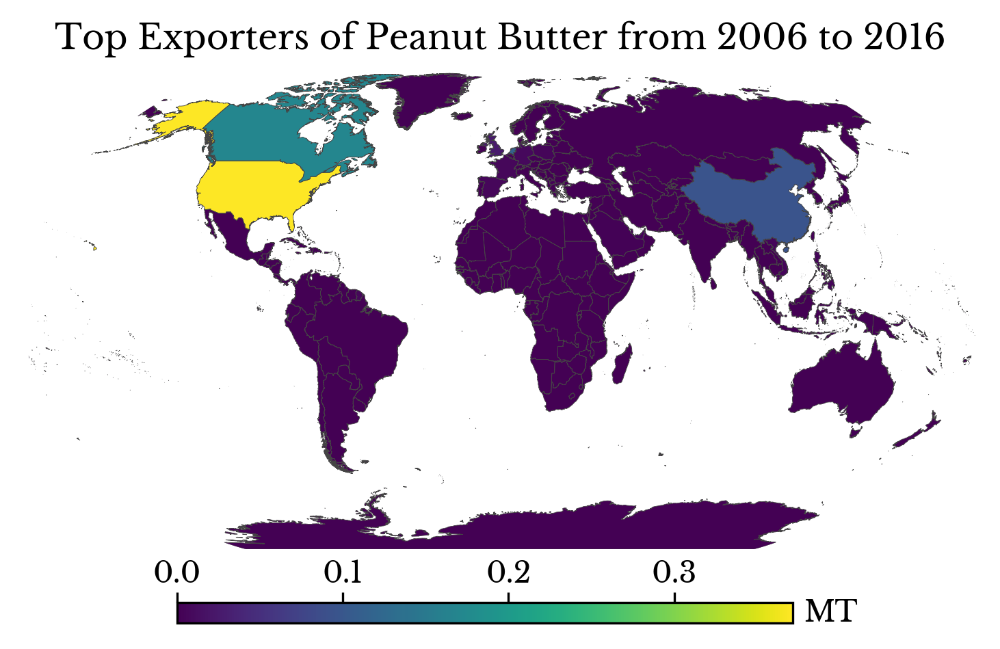
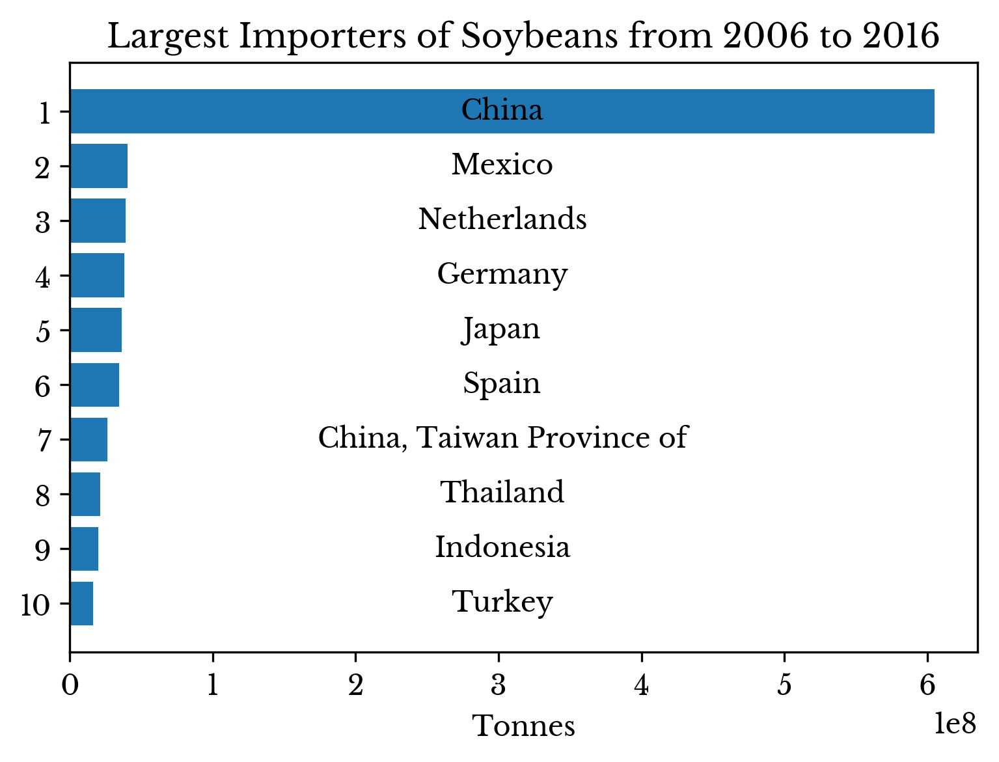
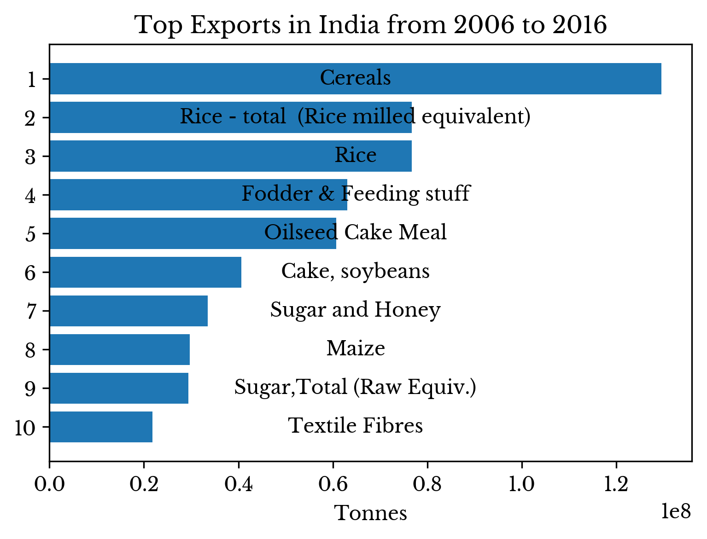
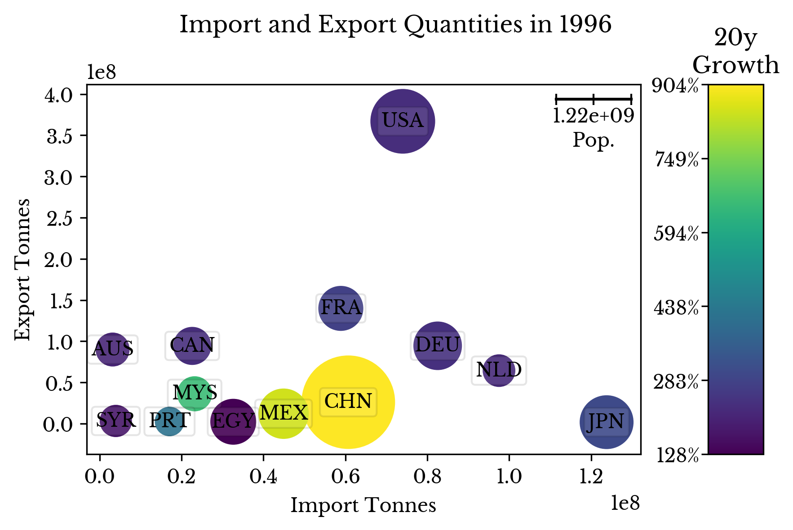

Visualizing International Trade of Food Products
Sat, 12 Jan 2019
Data Visualization, Economics, Food, International Trade
With the rise of globalization, countries increasingly trade food products internationally. Acting in their own economic interests, countries buy and sell food where profitable, much like any other product. Import and export records provide a fascinating window into this complex world of international food trade.Data Cleaning
The data in this post is available courtesy of the Food and Agriculture Organization (FAO) of the United Nations. The FAO provides a wide array of datasets regarding food products. This particular set records import and export quantities of different food products by country from 1961 to the present. The most recent data available as of this writing is for the year 2016.The dataset contains more missing values for the three most recent years: 2014, 2015, and 2016. Ignoring these values can cause the trend of trade growth to appear artificially lower during this period. Linear interpolation is used to extrapolate missing values, as seen in Code Block 1.
Di = D[D.AreaCode == aci][allYears]
ay = Di.any(0)
ay = ay[ay].index.astype(np.int) # Years country is active
ar = Di[Di.notnull().sum(1) > 1].index # Need >1 value to interpolate
Di.columns = pd.Index(allYears)
Di = Di.loc[ar, ay]
D.loc[ar, ay] = Di.interpolate('slinear', 1, limit=5, fill_value='extrapolate')Code Block 1: Linear Interpolation of Missing Values
However, it is important not to extrapolate data for countries that no longer exist. For instance, the dataset has rows for Czechoslovakia, which ceased to exist in 1993. To simplify this issue, it is assumed a country is active for a year only if it has a least one value present for the entire year. The variable ay records the active years for each country. Linear interpolation is only performed during these years.
The slinear method of interpolation uses scipy.interp1d internally. The fill_value named parameter comes from the scipy function and pandas passes it through via a **kwargs parameter. The extrapolate value allows the interpolation method to extrapolate the linear curve instead of limiting it to the maximum value.
{kind=link}
Figure 1: Number of Missing Values by Year
Figure 1 shows the number of remaining null values per year. The number is relatively fixed until 1991 and then decreases into the present. The countries that contribute most to this number in 1980 are shown in Table 1.
| Country | Null Values |
|---|---|
| Belgium | 1711 |
| Luxembourg | 1695 |
| Czechia | 1568 |
| Lithuania | 1562 |
| Slovakia | 1561 |
| Russian Federation | 1552 |
| Slovenia | 1545 |
| Latvia | 1522 |
| Estonia | 1519 |
| Croatia | 1503 |
| Kazakhstan | 1492 |
Table 1: Remaining Missing Values in 1980
Belgium and Luxembourg are missing due to the Belgium-Luxembourg Economic Union still in place in 1980; their values are mutually recorded as Belgium-Luxembourg for the year. The majority of the remainder are countries established after the dissolution of the Soviet Union in 1991. Indeed, the number of missing values begins decreasing as the former Soviet countries individually declare independence.
Overall Growth
The overall trend of exports and imports is shown in Figure 2. The slope of the curve for 2000-2016 is noticeably steeper than in most prior periods. Import and export curves nearly coincide as expected; goods that are exported from one country are imported by another. However, the import curve is discernibly lower than the export curve. The cause of this is apparent in the above missing value curve; there are more missing import fields than export fields.{kind=link}
Figure 2: Global Import and Export Quantities
Now, these two curves are intuitively related to world population. By dividing the yearly quantities by the yearly world population, an adjusted curve is created. Figure 3 shows the curves with the left y-axis representing tonnes per capita.
{kind=link}
Figure 3: Population Adjusted Global Imports and Exports
Trade of food products largely outpaces population growth with the noticeable exception of the 12-15 year period starting in the 1980s. This may be attributed in part to world population growth plateauing in the 80s before declining into the present. The dashed black curve in Figure 3 shows the yearly percentage change in world population.
Top Importers and Exporters
Countries importing the largest quantity of goods are computed for the years 1966, 1976, 1986, 1996, 2006, and 2016. The result is shown in Figure 4. |  |
{kind=link}
{kind=link}
{kind=link}
{kind=link}
Figure 4: Top Importers by Year
China's rapid growth is evident in the last four charts. In 1986, the country is not even found on the chart while in 2006 it is the top importer. China remains the top importer in 2016 and the volume of its imports more than doubles.
Countries exporting the largest quantity of goods are computed for the years 1966, 1976, 1986, 1996, 2006, and 2016. The result is shown in Figure 5.
{kind=link}
{kind=link}
{kind=link}
{kind=link}
{kind=link}
{kind=link}
Figure 5: Top Exporters by Year
The USA is the top exporter in the world for the years shown. Recently, South American countries show strong growth in their exports; Brazil and Argentina claim second and third place by a wide margin in 2016, though Argentina's output fluctuates somewhat in the 2010s.
Top Importers and Exporters by Item
Next, top import items in different time periods are explored. The dataset only provides total import and export totals for each country and item. So, it is not possible to determine from which country another country primarily imports. However with the rise of free trade in recent years, top importers and exporters for a given item provide some insight into this.For example, consider the top importers of bananas shown in Figure 6. The USA imports the largest number of bananas from 2006 to 2016 by a large margin. The country imports an average of over 4.2 million metric tons of bananas yearly during the period. Germany only imports an average of roughly 1.3 megatonnes of bananas over the period. However, correcting for the larger USA population, Germany actually imports more bananas per capita. The USA imports 0.013 tonnes per capita while Germany imports 0.016.
{kind=link}
{kind=link}
Figure 6: Top Importers of Bananas
Per capita, Belgium is by far the leading importer of bananas, importing roughly 0.12 tonnes per capita. However, Belgium re-distributes imported bananas and is a leading exporter of the fruit. Figure 7 shows the population adjusted import quantities.
{kind=link}
Figure 7: Bananas Imported per Capita
Top exporters of bananas are shown in Figure 8 to provide an idea of where these imports originate. Not surprisingly, South American countries comprise the bulk of the export quantities with Ecuador leading by a large margin. Notice that Belgium places 6th on this list.
{kind=link}
{kind=link}
Figure 8: Top Exporters of Bananas
The top importers and exporters of peanut butter are shown in Figure 9. The USA is both a leading importer and exporter of peanut butter, exporting and importing roughly 1.3 and 3.5 megatonnes over the period respectively. As is often the case, it can be more profitable to consume imports and export domestic products in global economies.
{kind=link}
{kind=link}
|  |
{kind=link}
{kind=link}
Figure 9: Top Importers and Exporters of Peanut Butter
Another interesting item type is soybeans. China is the largest importer of soybeans in the world by a huge margin, importing over 600 megatonnes from 2006 to 2016.
{kind=link}
{kind=link}
|  |
{kind=link}
{kind=link}
Figure 10: Top Importers and Exporters of Soybeans
The majority of soybean exports are from USA and Brazil. China uses soybeans both as a food product and also as feed for its most popular meat livestock: pigs.
Top Imports and Exports by Country
Top imports and exports by country are largely aggregate categories involving staples and livestock food and fodder. The top imports for several countries are shown in Figure 11. | |
{kind=link}
{kind=link}
{kind=link}
{kind=link}
Figure 11: Top Imports by Country
China's single largest import is soybeans; oilseeds are an aggregate group including soybeans and other crops such as canola and rapeseed.
|  | |
 | |
{kind=link}
{kind=link}
{kind=link}
{kind=link}
Figure 12: Top Exports by Country
Bananas are the single largest non-aggregate import item in the USA for the years 2006 to 2016.
Somewhat surprisingly, Japan imports large quantities of maize. However, it is primarily used as animal feed instead of being consumed directly.
Import/Export Quantities, Population Size, and Trade Growth
Finally, a scatter chart is constructed which compares countries on several axes simultaneously. In this chart, the x and y-axes represent tonnes of goods imported and exported respectively. Marker size represents population and color the 20 year percentage growth of trade volume for each country.|  |
{kind=link}
{kind=link}
{kind=link}
{kind=link}
Figure 13: Import and Export Quantities, Population, and Trade Growth by Year
The scatterplot for 2016 highlights the extraordinary import and export volumes for China and USA respectively. China's rapid growth is also apparent from comparing the chart for different years.